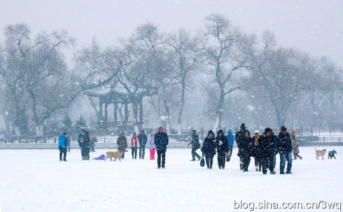

2017-12-11 08:47
这是吉林北山人民广场九龙亭附近的湖面众多市民在赏雪，散步，游乐！
时间：2017年12月10日
地点：吉林市北山！
器材：莱卡;尼康P900S
说明：又一场今冬较大的降雪来临，吉林气温降温幅度很大，由零下10多度一下降零下20多度，到处一片洁白，真是千里冰封，万里雪飘啊！吉林严寒的冬季真的来临了！大家都说：下雪真好！这才是真正的冬季，瑞雪兆丰年啊！ 说明：又一场今冬较大的降雪来临，吉林气温降温幅度很大，由零下10多度一下降零下20多度，到处一片洁白，真是千里冰封，万里雪飘啊！吉林严寒的冬季真的来临了！大家都说：下雪真好！这才是真正的冬季，瑞雪兆丰年啊！
这是吉林北山人民广场九龙亭附近的湖面众多市民在赏雪，散步，游乐！